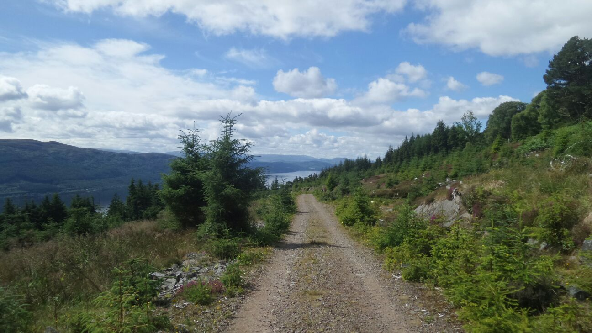
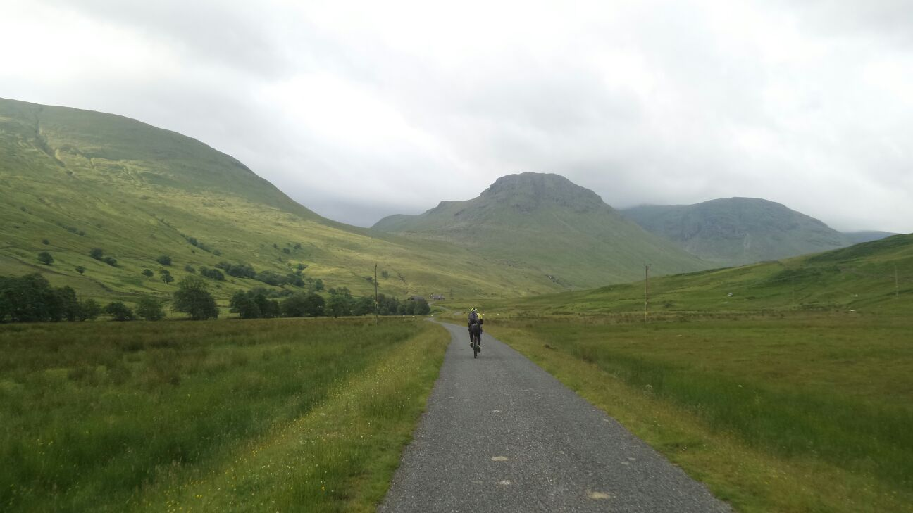

A 200 mile route from Inverness to Glasgow.
The Badger Divide route follows well established Rights of Way, Heritage Paths, long distance trails and a mix of estate and forestry gravel roads. Paved roads have been avoided wherever possible but a few remain.
The trail is suitable for a sturdy road or mountain bike and there aren’t any surfaces so rough you should have to push or carry the bike. Either kind of bike would have its advantages but there’s more easy going stuff than rough.
Ridden in two days or less is a decent challenge or go a little slower and take your time in one of the bothies or hostels the route goes past.
Although there isn’t any bike and hike there is some fairly undulating sections which shouldn’t be underestimated if you’re working out a schedule.
The route goes through or close to town wherever possible but there is a few stretches where stocking up if fairly crucial to having a nice ride. Between Fort Augustus and Killin would be the most notable.
The more remote parts are fairly exposed and far enough away from civilisation that you could get into bother if you’re not prepared. Please plan and pack sensibly and follow the outdoor access code.
If you intend to use one of the bothies that the route passes check out the MBA page for more information and seriously consider becoming a member and help support the great work they do. I have left the details on the bothies fairly vague on purpose to encourage riders to check out the organisation.
A large part of the route is waymarked in one way or another by various organisations, for more information on the great work these guys do have a look at the links page. The route isn’t in collaboration or endorsed by any of the organisations listed.
If you need any more information about the route send me a message and I’ll get back to you as soon as possible. Contact details are below.
Organisations that made this possible.
Without the hard work put in by organisation such as the Scottish rights of way Society this route would not be possible.
The routes isn't endorsed or in collaboration with any of these organisations and please obey the outdoor access code if you ride it. If you meet any estate vehicles let them past freely as there probably doing something that pays for the maintenance of the various roads and tracks the route uses. See links below to find out more about these organisation that make this type of travel through Scotland possible:
How to get in touch.
If you have any questions or queries you can get in touch with us by email at thebadgerdivide@yahoo.com